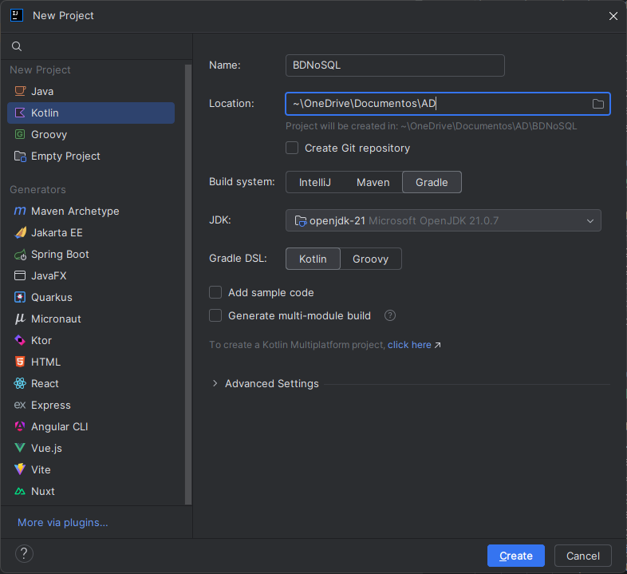
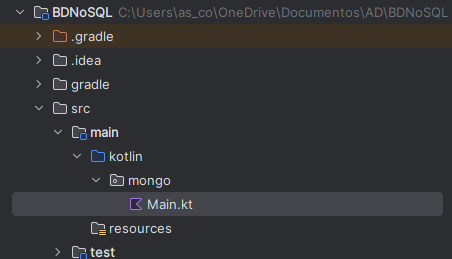
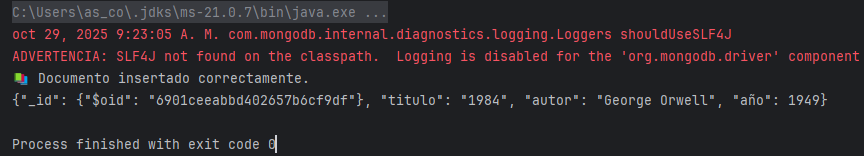
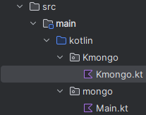
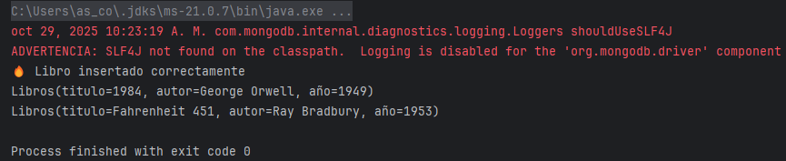
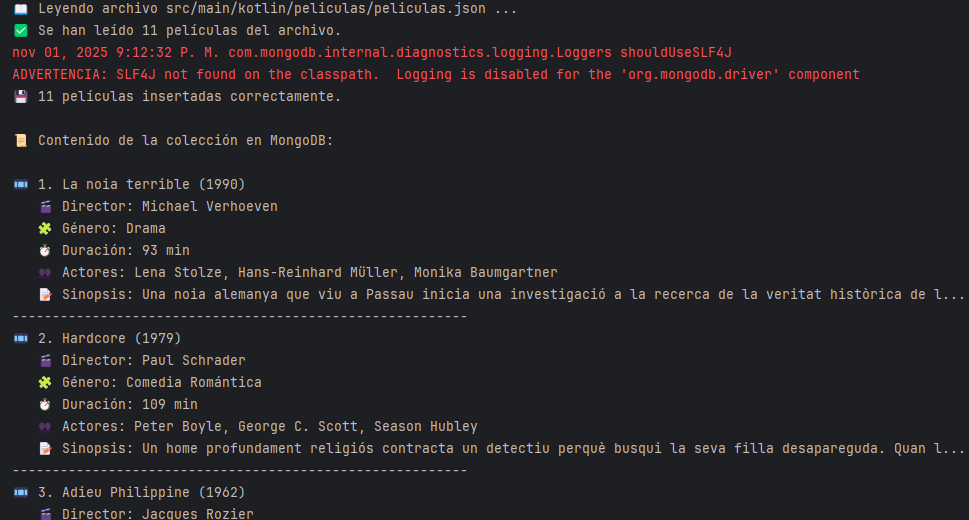

🔹Conexión
Para conectar una aplicación escrita en Kotlin con una base de datos MongoDB, existen dos opciones principales, según el objetivo y el nivel de control que se necesite sobre las operaciones:
1️⃣ Conexión con el controlador oficial de MongoDB (MongoDB Driver)
Es la opción más directa y de bajo nivel. Permite trabajar con las clases del paquete com.mongodb o org.bson para realizar operaciones CRUD (crear, leer, actualizar y eliminar) sobre las colecciones. Se utiliza cuando se quiere tener control total sobre las consultas, la conexión y la conversión de documentos BSON a objetos Kotlin.
2️⃣ Conexión mediante una librería de mapeo (ORM/ODM), como KMongo
KMongo es una capa de abstracción sobre el driver oficial, diseñada específicamente para Kotlin. Permite trabajar con data classes y consultas tipadas, simplificando el código y haciéndolo más idiomático. Es la opción más recomendada para proyectos educativos o empresariales donde se busca claridad, seguridad de tipos y menor código repetitivo.
A continuación veremos un ejemplo práctico de cada una de las dos formas de conectar Kotlin con MongoDB. Ambos ejemplos se ejecutarán sobre MongoDB Community Server en local y se crearán con Gradle desde IntelliJ.
3️⃣ Creamos un nuevo proyecto llamado BDNoSQL.

🔹Kotlin + Gradle + Driver oficial
1. Añadir las dependencias en Gradle
En el archivo build.gradle.kts, dentro del bloque dependencies, añadimos:
dependencies {
implementation("org.mongodb:mongodb-driver-sync:5.2.0")
}
2. Ejemplo sobre la colección Libros
Crea un archivo main.kt en un paquete nuevo llamado mongo con el siguiente código:

import com.mongodb.client.MongoClients
import com.mongodb.client.MongoCollection
import com.mongodb.client.MongoDatabase
import org.bson.Document
fun main() {
// 1Conexión al servidor local
val uri = "mongodb://localhost:27017"
val client = MongoClients.create(uri)
// Seleccionar base de datos
val database: MongoDatabase = client.getDatabase("biblioteca")
// Seleccionar colección
val coleccion: MongoCollection<Document> = database.getCollection("libros")
// Insertar un documento
val doc = Document("titulo", "1984")
.append("autor", "George Orwell")
.append("año", 1949)
coleccion.insertOne(doc)
println("Documento insertado correctamente.")
// Leer documentos
for (libro in coleccion.find()) {
println(libro.toJson())
}
client.close()
}
Advertencia
Al ejecutar el programa os aparecerá el siguiene mensaje:

Esto no es un error, solo una advertencia. MongoDB intenta usar SLF4J (Simple Logging Facade for Java) para mostrar mensajes de registro (logs) sobre la conexión, operaciones, etc.
Como tu proyecto no incluye ninguna librería de logging, te avisa de que no podrá mostrar esos logs internos, pero el programa sigue funcionando perfectamente.
🔹Kotlin + Gradle + KMongo
1. Añadir las dependencias en Gradle
En el archivo build.gradle.kts, dentro del bloque dependencies, añadimos:
dependencies {
implementation("org.litote.kmongo:kmongo:5.1.0")
}
2. Ejemplo sobre la colección Libros
Crea un archivo main.kt en un paquete nuevo llamado kmongo con el siguiente código:

import org.litote.kmongo.*
data class Libros(val titulo: String, val autor: String, val año: Int)
fun main() {
// Crear conexión
val client = KMongo.createClient() // Por defecto: mongodb://localhost:27017
val database = client.getDatabase("biblioteca")
val coleccion = database.getCollection<Libros>()
// Insertar datos
val libro = Libros("Fahrenheit 451", "Ray Bradbury", 1953)
coleccion.insertOne(libro)
println("Libro insertado correctamente")
// Consultar datos
val resultados = coleccion.find()
resultados.forEach { println(it) }
client.close()
}
Nota
Aparecerán los dos libros insertados, tanto en el ejemplo anterior como en este, ya que la colección Libros es la misma.

🔹Control de errores
Cuando un programa se conecta a una base de datos como MongoDB, siempre existe la posibilidad de que ocurran errores: la base de datos puede no estar disponible, los datos pueden ser incorrectos o una operación puede fallar por un conflicto o por formato inválido.
Por eso, es importante incluir control de errores en el código, especialmente en las operaciones de conexión y en las operaciones CRUD (insertar, leer, actualizar, eliminar).
El control de errores se hace con bloques try-catch. Así puedes capturar las excepciones y evitar que el programa se detenga bruscamente.
Buenas prácticas:
- Verificar que el servidor MongoDB está en ejecución antes de conectar.
- Usar try-catch en las secciones críticas del programa (especialmente conexión e inserción).
- Mostrar mensajes claros al usuario para facilitar el diagnóstico.
- Cerrar el cliente con client.close() en un bloque finally si se usa una conexión persistente.
try { val client = KMongo.createClient() // Por defecto: mongodb://localhost:27017 val database = client.getDatabase("biblioteca") val coleccion = database.getCollection<Libros>() // Insertar datos val libro = Libros("Fahrenheit 451", "Ray Bradbury", 1953) coleccion.insertOne(libro) println("Libro insertado correctamente") // Consultar datos val resultados = coleccion.find() resultados.forEach { println(it) } client.close() } catch (e: Exception) { println("⚠️ Error al acceder a MongoDB: ${e.message}") } finally { //si se usa una conexión persistente. // Cierre seguro del cliente client?.close() println("🔒 Conexión cerrada.") }
🔹Construir una base de datos MongoDB
Existen principalmente dos maneras de crear y poblar una base de datos en MongoDB:
1. Inserción manual de documentos
Podemos crear los documentos directamente desde la consola de MongoDB o desde un programa, utilizando instrucciones insertOne() o insertMany() con los datos escritos a mano.
Por ejemplo: Insertar un película en una colección llamada peliculas.
db.peliculas.insertOne({
"titol": "La noia terrible",
"director": "Michael Verhoeven",
"genere": "Drama",
"any": 1990
})
Este método es útil para hacer pruebas rápidas o añadir registros sueltos, pero no resulta práctico cuando tenemos muchos datos.
2. Lectura desde un archivo JSON
Cuando ya disponemos de un conjunto de datos estructurados (por ejemplo, en un archivo json), podemos leer el archivo desde un programa y convertir cada elemento en un documento MongoDB. Esto permite crear colecciones completas de forma automática, sin escribir los documentos uno a uno. A partir de este archivo, un programa en Kotlin puede leer los datos y añadirlos automáticamente a una colección MongoDB mediante las funciones insertOne() o insertMany().
En este ejemplo veremos cómo crear una base de datos MongoDB, utilizando el controlador KMongo, a partir de un archivo JSON llamado peliculas.json, que ubicaremos en un paquete nuevo llamado peliculas, dentro del paquete kmongo (src/main/kotlin/kmongo/peliculas/).
Vamos a desarrollar dos programas equivalentes, pero utilizando dos librerías diferentes para el tratamiento de los datos JSON: kotlinx.serialization y Jackson.
Ambos programas trabajarán con el mismo archivo de datos peliculas.json, y realizarán exactamente los mismos pasos:
- Lee el archivo JSON.
- Convertir los datos leídos en una lista de objetos de la clase Pelicula.
- Insertar los objetos en una colección de MongoDB llamada peliculas, utilizando la librería KMongo, que permite trabajar directamente con clases de datos Kotlin (data class).
- Recupera y muestra los datos almacenados en la colección.
--
🔹Estructura del archivo JSON
[
{
"titol": "La noia terrible",
"titol_or": "Das schreckliche Mädchen",
"director": "Michael Verhoeven",
"genere": "Drama",
"durada": 93,
"any": 1990,
"actors": ["Lena Stolze", "Hans-Reinhard Müller", "Monika Baumgartner"],
"sinopsi": "Una noia alemanya que viu a Passau inicia una investigació sobre el passat..."
},
{
"titol": "Hardcore",
"titol_or": null,
"director": "Paul Schrader",
"genere": "Comedia",
"durada": 109,
"any": 1979,
"actors": ["Peter Boyle", "George C. Scott", "Season Hubley"],
"sinopsi": "Un home profundament religiós contracta un detectiu per trobar la seua filla..."
}
]
🔹Estructura del proyecto
BDNoSQL/
├─ build.gradle.kts
├─ src/
└─ main/
└─ kotlin/
└─ kmongo/
└─ peliculas/
├─ MainSerialization.kt → programa con kotlinx.serialization
└─ MainJackson.kt → programa con Jackson
└─ peliculas.json → archivo con las películas
🔹Programa utilizando kotlinx.serialization: MainSerialization.kt
package kmongo.peliculas
import kotlinx.serialization.Serializable
import kotlinx.serialization.builtins.ListSerializer
import kotlinx.serialization.json.Json
import org.litote.kmongo.*
import org.litote.kmongo.getCollection
import java.io.File
@Serializable
data class PeliculaSerializada(
val titol: String = "",
val titol_or: String? = null,
val director: String = "",
val genere: String = "",
val durada: Int = 0,
val any: Int = 0,
val actors: List<String>? = null,
val sinopsi: String = ""
)
fun main() {
val ruta = "src/main/kotlin/kmongo/peliculas/peliculas.json"
val archivo = File(ruta)
if (!archivo.exists()) {
println("❌ No se ha encontrado el archivo $ruta")
return
}
println("📖 Leyendo archivo $ruta ...")
try {
// 1️⃣ Leer y deserializar las películas con kotlinx.serialization
val json = Json { ignoreUnknownKeys = true }
val peliculas: List<PeliculaSerializada> = json.decodeFromString(
ListSerializer(PeliculaSerializada.serializer()),
archivo.readText(Charsets.UTF_8)
)
println("✅ Se han leído ${peliculas.size} películas del archivo.")
// Conexión a MongoDB con KMongo
val cliente = KMongo.createClient("mongodb://localhost:27017")
val bd = cliente.getDatabase("peliculas_db")
val coleccion = bd.getCollection<PeliculaSerializada>()
// Limpiar colección
coleccion.drop()
// Insertar todas las películas directamente (sin Document)
coleccion.insertMany(peliculas)
println("💾 ${peliculas.size} películas insertadas correctamente.\n")
// Consultar y mostrar todas
val lista = coleccion.find().toList()
println("📜 Contenido de la colección en MongoDB:\n")
var i = 1
for (p in lista) {
println("🎞️ $i. ${p.titol} (${p.any})")
println(" 🎬 Director: ${p.director}")
println(" 🧩 Género: ${p.genere}")
println(" ⏱️ Duración: ${p.durada} min")
if (p.actors != null) println(" 👥 Actores: ${p.actors.joinToString(", ")}")
println(" 📝 Sinopsis: ${p.sinopsi.take(100)}...")
println("---------------------------------------------------------")
i++
}
// Ejemplo de consulta: solo dramas ordenados por título
val dramas = coleccion.find(PeliculaSerializada::genere eq "Drama").sortedBy { it.titol }
println("\n🎭 --- Películas de género 'Drama' ---\n")
for (p in dramas) {
println("${p.titol} - ${p.director} (${p.any})")
}
cliente.close()
println("\n🔚 Proceso finalizado correctamente.")
} catch (e: Exception) {
println("❌ Error durante la ejecución: ${e.message}")
e.printStackTrace()
}
}
🔹Programa utilizando Jackson: MainJackson.kt
package kmongo.peliculas
import com.fasterxml.jackson.module.kotlin.jacksonObjectMapper
import com.fasterxml.jackson.module.kotlin.readValue
import org.litote.kmongo.KMongo
import org.litote.kmongo.eq
import org.litote.kmongo.getCollection
import java.io.File
import org.litote.kmongo.Id
import org.litote.kmongo.newId
data class Pelicula(
val _id: Id<Pelicula> = newId(),
val titol: String = "",
val titol_or: String? = null,
val director: String = "",
val genere: String = "",
val durada: Int = 0,
val any: Int = 0,
val actors: List<String>? = null,
val sinopsi: String = ""
)
fun main() {
val ruta = "src/main/kotlin/kmongo/peliculas/peliculas.json"
val archivo = File(ruta)
if (!archivo.exists()) {
println("❌ No se ha encontrado el archivo $ruta")
return
}
println("Leyendo archivo $ruta ...")
try {
// Crear el mapper de Jackson
val mapper = jacksonObjectMapper()
// Leer el archivo y convertirlo en lista de Pelicula
val peliculas: List<Pelicula> = mapper.readValue(archivo)
println("✅ Se han leído ${peliculas.size} películas del archivo.")
// Conectarse a MongoDB con KMongo
val cliente = KMongo.createClient("mongodb://localhost:27017")
val baseDatos = cliente.getDatabase("peliculas_db")
val coleccion = baseDatos.getCollection<Pelicula>()
// Limpiar colección (opcional)
coleccion.drop()
// Insertar todas las películas de golpe
coleccion.insertMany(peliculas)
println(" ${peliculas.size} películas insertadas correctamente.\n")
// Mostrar todas las películas
val lista = coleccion.find().toList()
println("Contenido de la colección en MongoDB:\n")
var i = 1
for (p in lista) {
println("🎞️ $i. ${p.titol} (${p.any})")
println(" 🎬 Director: ${p.director}")
println(" 🧩 Género: ${p.genere}")
println(" ⏱️ Duración: ${p.durada} min")
if (p.actors != null) println(" 👥 Actores: ${p.actors.joinToString(", ")}")
println(" 📝 Sinopsis: ${p.sinopsi.take(100)}...")
println("---------------------------------------------------------")
i++
}
// Consultar solo los dramas, ordenados por título
println("\n--- Películas de género 'Drama' ---\n")
val dramas = coleccion.find(Pelicula::genere eq "Drama").sortedBy { it.titol }
for (p in dramas) {
println("${p.titol} - ${p.director} (${p.any})")
}
cliente.close()
println("\n Proceso finalizado correctamente.")
} catch (e: Exception) {
println("❌ Error durante la ejecución: ${e.message}")
e.printStackTrace()
}
}
🔹Salida esperada:
